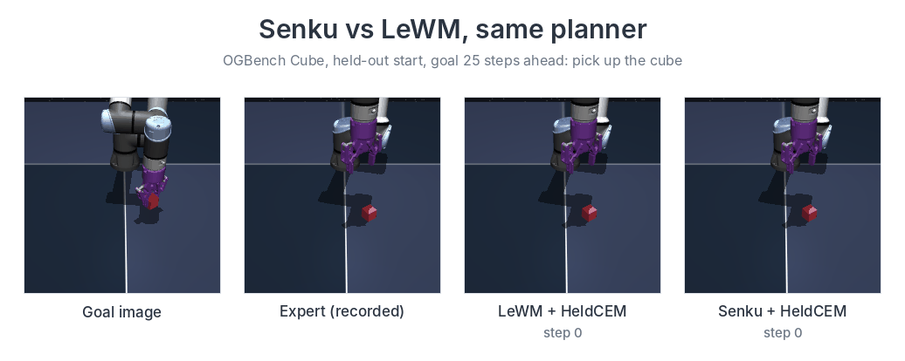

Senku: a world model with a global latent and state tokens
A self-supervised world model that plans from pixels. Each frame becomes a global latent plus 49 spatial state tokens, trained on frames and actions only. With the same planner as LeWM: 88.8% vs 74.2% on OGBench Cube, 37.3% vs 9.0% on starts that need a grasp, and a tie on PushT. It is worse at placing a held cube away (11.0% vs 57.0%).